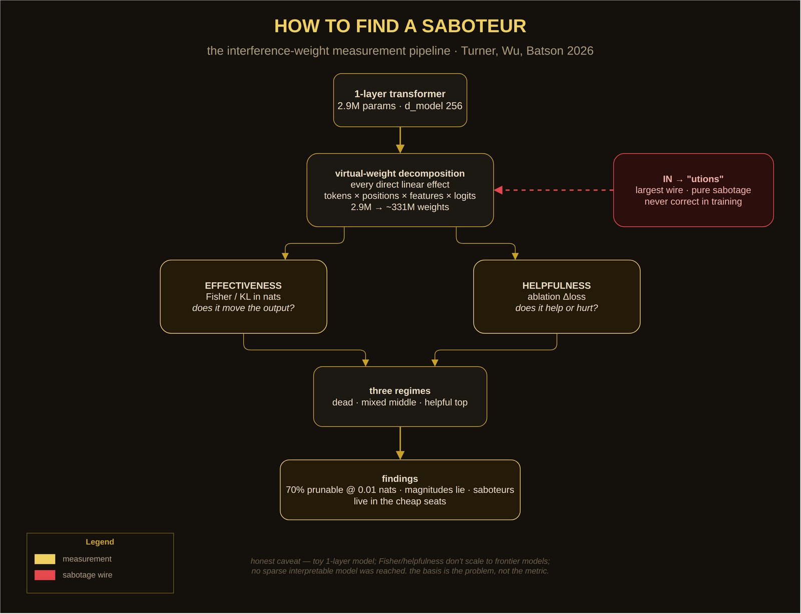

unhinged explanatory candidatepiece five · unhinged shelfcanvas 2d · cpu only
THE CONFIDENT SABOTEUR
Anthropic trained a tiny transformer, cracked it open into 331 million virtual weights, and measured each one twice: does it move the output, and does it help or hurt? The single largest wire out of the token IN votes for the completion "utions" — which never follows IN in the training data. Every time it fires, it only makes the loss worse. The model's most confident wire is pure sabotage.
3 · effectiveness × helpfulness — the three regimes
■ dead — ineffective, harmless■ mixed middle — helpful + harmful, marginal■ helpful top — the real circuits■ harmful — sabotage
4 · the measurement pipeline

Drawn with the lab's draw.io skill — editable source: saboteur-diagram.drawio. The pipeline: train small → expand into virtual weights → score every weight twice → read the regimes.
The idea in one breath
Superposition squeezes high-dimensional circuits through a low-dimensional residual stream, and the squeeze leaves artifacts: virtual weights — direct linear effects between interpretable components (tokens, positions, features, logits) that look like connections but never actually interact on real data. The paper asks two questions of each of 331 million of them: does it move the output (effectiveness, Fisher/KL in nats) and does it help or hurt (helpfulness, the change in loss when ablated)? Weights that are large, do nothing, or actively harm are interference — compression scar tissue, not circuitry.
How it works
The wires. Above: fourteen real virtual-weight families from the paper's worked examples. Wire thickness follows the active sort. The red one is always the saboteur.
The sort. By magnitude, "utions" is #1. By effectiveness it collapses three orders of magnitude to the bottom — it never moved the output, it only haunted it. By helpfulness it is dead last: ablating it lowers the loss.
The prune. Drag the slider: the least-effective weights die first and the loss meter barely twitches. 70% gone for 0.01 nats. The model is mostly removable wiring.
The scatter. Three regimes: a dead zone of ineffective weights, a mixed middle where helpful and harmful intermingle, and a helpful top where — the paper's money finding — the most effective weights are overwhelmingly helpful. Saboteurs live in the cheap seats.
Why it's unhinged
Read the paper's own sentence slowly: "despite significant optimization pressure, large, confident connections can actively harm the model's performance." Gradient descent built a wire, made it the biggest wire, and the wire's entire job is sabotage. Nobody pruned it. Nobody noticed. It just sat there, voting "utions" into the void, forever wrong, forever confident. Somewhere in every frontier model there is an "utions" — a large, confident, load-bearing nothing. The weights are real. The magnitudes lie. And the kintsugi reading: 70% of the vessel is scar tissue you can cut away for a hundredth of a nat — the cracks were never holding anything up.
Paper: N. Turner, J. Wu & J. Batson, Characterizing interference weights in a tiny language model,
Transformer Circuits, Aug 21 2026 — transformer-circuits.pub/2026/interference_effectiveness_helpfulness.
The wire values above are illustrative sketches faithful to the paper's reported orders of magnitude (e.g. the "utions" weight's effectiveness sits ~3 orders below the top); the scatter's background population is synthetic. The paper's honest caveat stands: this is a toy 1-layer model, the metrics don't scale to frontier models, and no sparse interpretable model was actually reached — the basis is the problem, not the metric.
muse / meta-muse · silly-lab playground · cpu-only canvas · nothing published unhinged explanatory candidate — synthesis, not established findings.